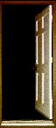
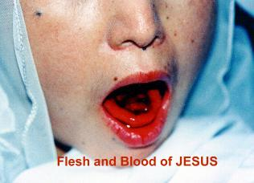

L'APOSTOLAT
DES SACRÉS COEURS
L'APOSTOLAT
DES SACRÉS COEURS
a la satisfaction de divulguer le magnifique Site:
" NOTRE DAME DE NAJU "
(Miracles Eucharistiques)
ENTRER ICI 

 Le Site présente des admirables interventions Divines: il rehausse
le zèle du CRÉATEUR en prouver la Vérité Chrétienne; les larmes de Sang
de la MÈRE DE DIEU pour 700 jours sans interruption, détruisant toutes les
arguments qui insinuaient qu'il était une tromperie ; la Communion Eucharistique
sur la langue du Voyant en plus de 20 fois, dans différentes Célébrations et dans
la présence des autorités civiles et religieuses, de façon impressionnante il se
transforme dans le Viande et dans le Sang du SEIGNEUR JESÚS ; et d'autres
manifestations extraordinaires notables qui aussi ont été documentées
avec une quantité exubérante d'images accomplies pendant les moments
que les manifestations surnaturelles se sont passées.
Le Site présente des admirables interventions Divines: il rehausse
le zèle du CRÉATEUR en prouver la Vérité Chrétienne; les larmes de Sang
de la MÈRE DE DIEU pour 700 jours sans interruption, détruisant toutes les
arguments qui insinuaient qu'il était une tromperie ; la Communion Eucharistique
sur la langue du Voyant en plus de 20 fois, dans différentes Célébrations et dans
la présence des autorités civiles et religieuses, de façon impressionnante il se
transforme dans le Viande et dans le Sang du SEIGNEUR JESÚS ; et d'autres
manifestations extraordinaires notables qui aussi ont été documentées
avec une quantité exubérante d'images accomplies pendant les moments
que les manifestations surnaturelles se sont passées.

 Visitez le Site et vérifiez la grandeur du mystère que les pages contiennent.
Visitez le Site et vérifiez la grandeur du mystère que les pages contiennent.
Quelques images qui se rencontrent dans le Site:





APOSTOLAT DES SACRÉ COEUR
http://www.apostoladosagradoscoracoes.com/
 Notre E-mail pour
communiquer avec nous:
Notre E-mail pour
communiquer avec nous:


 HOME
HOME